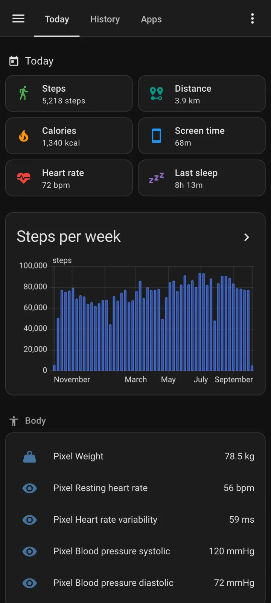
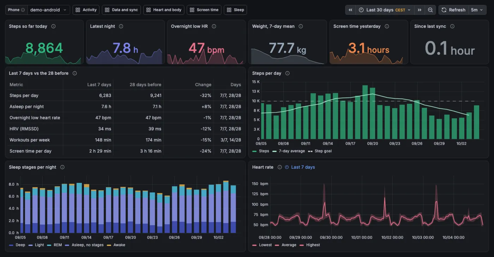
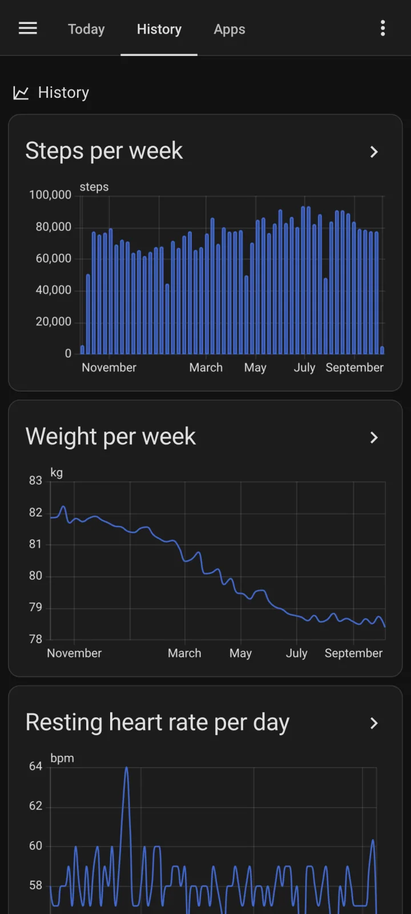
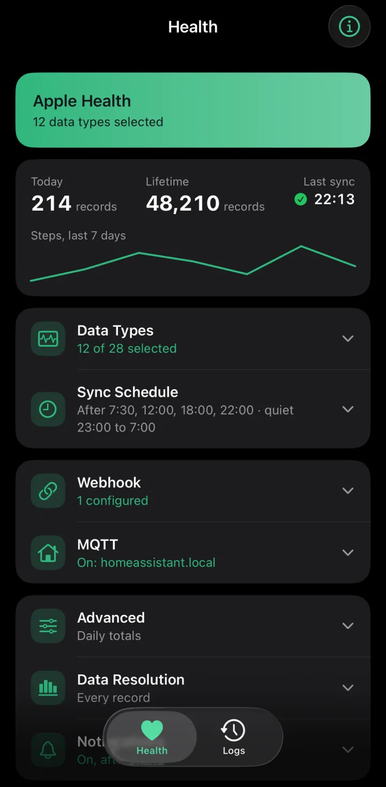

Life Dashboard Companion for Android
Android 8.0 or newer; health data from Android 9.
Google Play: coming, as a paid listing of the same app · Obtainium · F‑Droid: coming
Life Dashboard Companion sends what your watch, ring or scale records to a server you already run at home: Home Assistant, a Grafana stack, MQTT or your own webhook. The charts live there; the app itself only reads and sends.



{ "source": "health_connect",
"steps": [{
"count": 412,
"source": "com.ouraring.oura"
}] }Health Connect and Apple Health keep their data on the phone, with no web API. Life Dashboard Companion reads it there on your schedule and sends only what's new.
Not every brand shares everything. Samsung and Garmin keep HRV and resting heart rate to themselves, and Garmin Connect needs Android 14. See what arrives for Garmin, Samsung, Fitbit and the other brands.
On the phone, where the data already is
Home Assistant, the Grafana stack, or your own broker or URL.
Scan the integration's QR code, or enter an address.
Pick your data, tap Sync Now, and the schedule does the rest.


Installs through HACS. No YAML, no broker, and the phone never gets a Home Assistant login.
X-Signature: sha256=9f2c4e…
{
"source": "health_connect",
"daily_totals": [{ "date": "2026-10-04", "steps": 1204 }],
"heart_rate": [{
"bpm": 61, "time": "2026-10-04T06:58:00Z",
"uuid": "708a76cb-45d3-…",
"source": "com.fitbit.FitbitMobile" }]
}Any URL that takes JSON: n8n, Node-RED or a script of your own. Or an MQTT broker you already run. Once the data is in your own database, a model on your own network can read it too.
A Docker Compose backend for both apps, with six dashboards. Its demo shows 60 days of made-up data before you install anything on a phone.
More about the Grafana stack
Both apps send the same JSON, so an Android phone and an iPhone can share one Home Assistant or one stack.
A self-hosted health record. Its webhook integration reads the Life Dashboard payload and calls the app “Highly Recommended for Android Users”.
On GitHub Built on itA personal health dashboard in SQLite, with reports and an MCP server. Its data comes from Life Dashboard Companion.
On GitHub Your projectTell me in Discussions, and it can join this list.
Open DiscussionsI'm Owen Vogelaar. I started this app to feed a personal dashboard of my own, a private project that pulls my health and phone data together in one place. Getting that data off the phone turned out to be the hard part, so the app became a project of its own.
Most people who want this already run Home Assistant, so I built the integration; for anyone who'd rather have plain Postgres and Grafana, the stack. The app runs on my own phone every day.
A good part of the code is written with AI help; the AI policy explains how changes are reviewed and tested. Questions and ideas go to Discussions.
Nothing to sign up for.
No analytics, ads or tracking SDKs.
MIT licensed, all four parts.
Check an APK against its source.
Using Home Assistant? Add the integration first; the app scans its QR code.
Android 8.0 or newer; health data from Android 9.
Google Play: coming, as a paid listing of the same app · Obtainium · F‑Droid: coming
iOS 17 or newer. Building it takes a Mac and about an hour.
App Store: coming · TestFlight: coming
Home Assistant 2026.3 or newer.
Docker with Compose.
No. Home Assistant gets the most out of it, with the integration's sensors and history, but both apps also send to the Grafana stack, to any MQTT broker, and to any URL that accepts a JSON POST, such as n8n, Node-RED or a script of your own. The webhook guide shows the payload.
Keep the companion app for presence, notifications and device sensors; the two run side by side. Its 26 Health Connect sensors show the latest value or a daily total, with history from the day you enable them. Life Dashboard Companion reads 33 types, keeps every day in long-term statistics, adds screen time per app, and also sends to MQTT and webhooks. The comparison lists the differences.
Anything that writes to Health Connect or Apple Health: Samsung Health, Apple Watch, Google Health (Fitbit and Pixel Watch), Garmin Connect, Oura, Withings, Gadgetbridge and many more. What arrives depends on what each vendor shares: Garmin and Samsung, for example, don't share HRV or resting heart rate with Health Connect, and Garmin Connect needs Android 14. The brand guides show what each one writes and what it keeps to itself.
All four parts are MIT licensed and free. The signed APK on GitHub is free, Obtainium installs that same APK, and the F-Droid build will be free once it's listed. The Google Play version will be a paid listing of the same app, built from the same source and signed with the same key, for people who'd rather install from Play and want to support the project that way. The iPhone app is free to build with Xcode.
Health Connect is the place on Android where Samsung Health, Garmin Connect and other apps store your health data; Apple Health is the same on iPhone. Home Assistant is open-source software that runs a smart home on a computer in your house. HACS is a store for extra Home Assistant integrations. An APK is an Android app file you install yourself, outside the Play Store. A webhook is a web address on your own server that receives data. MQTT is a messaging system many smart homes use. A backfill sends older data, up to a year back.
No. Life Dashboard Companion moves data your watch, ring or scale already recorded to a server you run. It doesn't measure, diagnose or treat anything and gives no health advice. Talk to a doctor about what the numbers mean for you.
I build it with a lot of help from Claude Code, which drafted a large part of the code. I decide what gets built and read every change before it lands. CI runs unit tests, lint and an instrumented suite on an Android emulator, and changes to syncing are tested by hand on a real phone against Home Assistant before a release. The apps contain no AI and call no AI service. The AI policy has the details.
Your setup doesn't depend on that person. There's no Life Dashboard server to switch off, your history lives in your own Home Assistant or database, and the MIT license lets anyone carry the code on. The first release shipped in February 2026, and the changelog tracks every change since.
Source, issues and discussions on GitHub. New versions in the release feed.